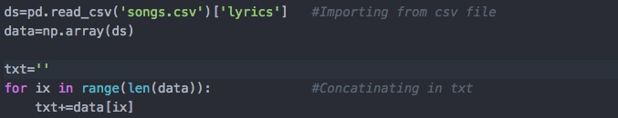
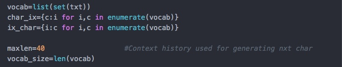
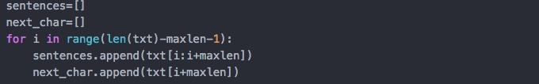
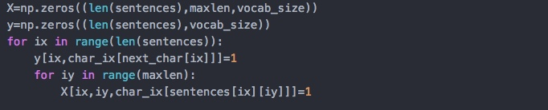
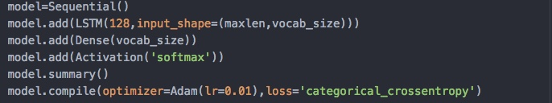
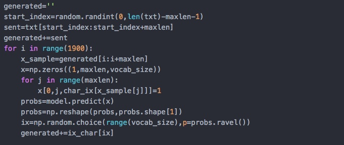

Generating sequence of sentences requires some persistence, as last few words determines the next words. Recurrent Neural Networks(RNNs) are made for these type of tasks
But as they are harder to train and do not hold the long term dependencies,thus LSTMs are more popular. I won't cover LSTMs, but If you want to know more about them read the amazing blog by Christopher Olah
You can train your model with any form of text like Shakerspeare's ,linux code base or even on Game of Thrones script, I worked with EdSheeran's Songs (You can download data from here)
Building the model
1.) Importing all the Dependencies

2.) Loading the data and combining all songs in txt .
3.) Assigning all unique chars to their corresponding index number and storing in the dictionary. Similar to generating bag of words model.
4.) Generating the training data. Each sentence will be of length 40 which will be used to predict the next char.
5.)Input in Lstm is in the form of Numbers. Each char is a one hot vector of length vocab size. Each sentence is of len 40. Shape of X :(No_sent,sent_len,vocab_size)
6.) Making a Sequential model in keras .
7.) Training the model. Don't train your model for too long otherwise it will over-fit.
8.) Using the output generated through the model to generate song of 1900 (avg length of his songs ) char length song .
Song generated after 10 Epochs.
 Doesn't it look like one of his Songs .
Doesn't it look like one of his Songs .
You can check out the complete code on Github
If you face any Errors or difficulty, Feel free to contact me through Facebook or whatever you like.